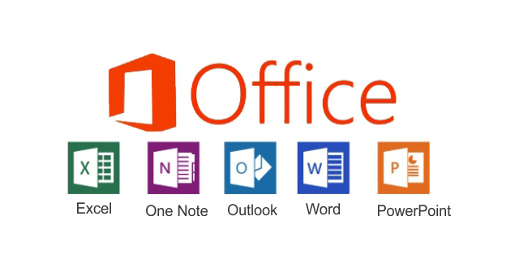

Outline
INFORMATION TECHNOLOGY
- What is Information Technology Input / Output and Storage Devices
- What is Computer Using Input Devices?
- History of Computer Using Output Devices
- Computer Memory
- Data and Storage Devices
COMPUTER HARDWARE AND SOFTWARE
- What is Hardware?
- Software and Types
INTRODUCTION TO WINDOWS 8
- What is Operating System ACCESSING THE START MENU
- Windows History Using Start Menu Option
- Windows Environment Customizing the Start Menu
- A First Look at the Windows Desktop Finding Programs, Files & Settings
- Windows Taskbar
CUSTOMIZING THE WINDOWS DESKTOP
- Using Icons & Shortcuts
- Customizing Backgrounds & Window Appearance
- Customizing Screensavers & Icons
- Changing Screen Resolution
- MS OFFICE
INTRODUCTION TO INTERNET
- What is Internet?
- Advantages of Internet
- World Wide Web
E-MAIL SYSTEM AND ITS WORKING
- E-Mail Registration
- Check a Mail
- Compose a Mail
- Attachments
